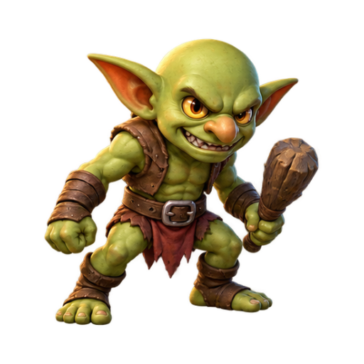
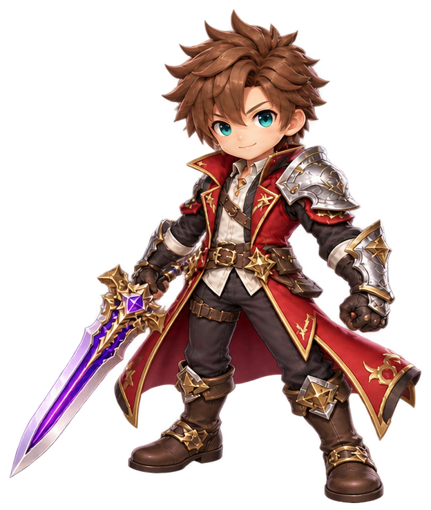

表示された日本語をローマ字で入力。入力欄にカーソルを合わせ、Enterで計測開始です。
カテゴリ：ことば／どうぶつ／食べ物／四字熟語／国／スポーツ／都道府県／職業／乗り物／自然・天気／ことわざ／ファンタジー／音楽
全3部屋の見下ろし型ダンジョン。敵を全滅させ、開いたドアを進み、最後のボスを倒して出口へ。赤い予告範囲から回避しましょう。
ルナ（魔法使い）／レン（弓使い）／カイ（武闘家）も選択可能。技・HP・速度・通常攻撃はキャラクターごとに異なります。
タイピングで練習バトルで実戦装備を購入遺跡を攻略
速さだけでなく正確さを上げ、コンボと時間回復を狙うのが上達への近道です。